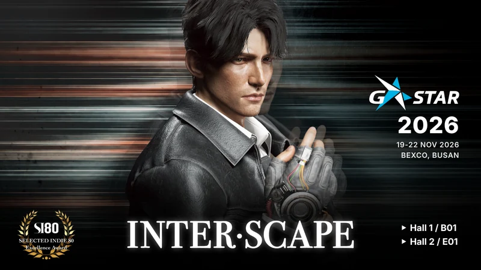
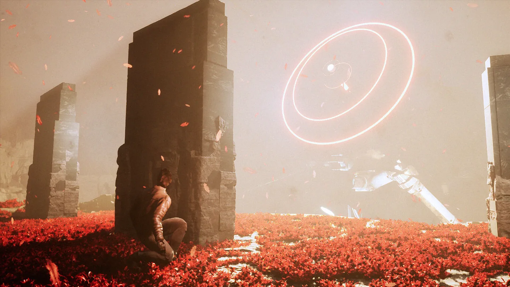

지스타 2026에서 만나는 케이
11월 19일부터 22일까지 부산 벡스코에서 열리는 시연 안내. 콘솔게임 공동관(1관 B01)과 레드브릭하우스 부스(2관 E01)에서 플레이할 수 있다.
ROOMTONE GAMES 스토리 액션 어드벤처
잠든 이들을 깨우기 위해, 요원 케이는 타인의 꿈으로 들어갑니다.
PC · PlayStation 5 · 출시 예정

The story
블루닷의 드림머신 ‘오라클’ 덕분에 사람들은 원하는 꿈을 꿀 수 있었다. 검은 구체가 하늘에 나타나기 전까지는.
이제 누구도 잠에서 깨지 못한다. 다른 사람의 꿈에 들어갈 수 있는 다이브 요원 케이는 그들을 깨울 방법을 찾아 나선다.


Screening room
Windows PC와 PlayStation 5로 출시 예정입니다. 정확한 출시일은 아직 공개되지 않았습니다.
Steam 버전은 한국어를 포함한 30개 언어의 인터페이스와 자막을 지원하며, 음성은 영어입니다.